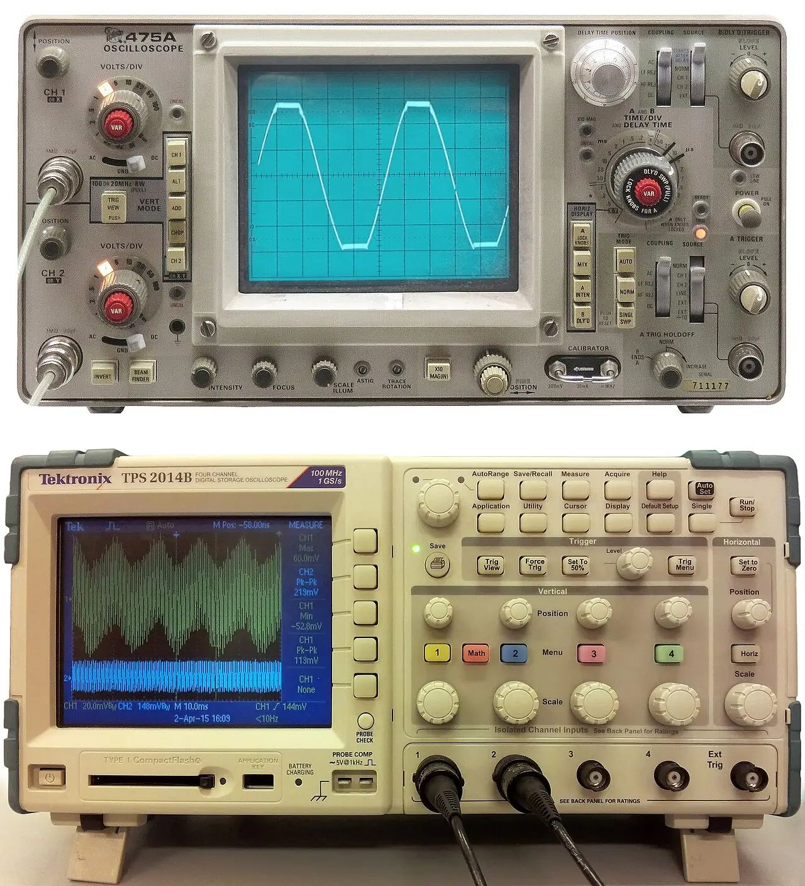
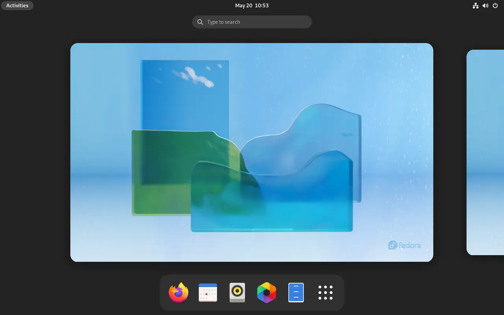
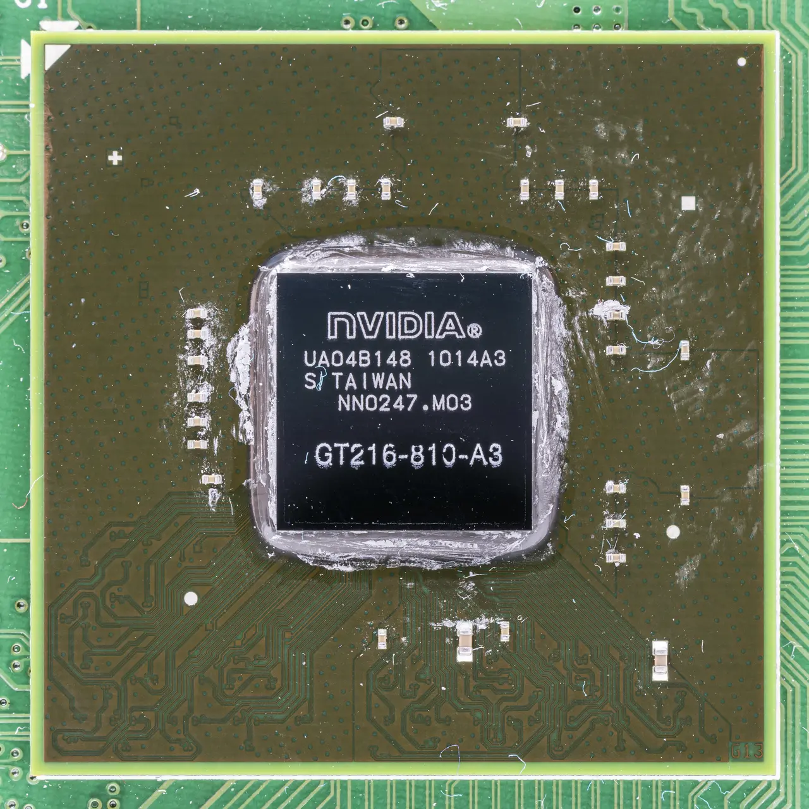
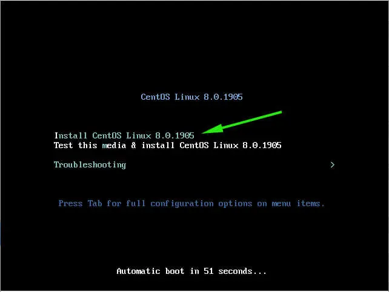
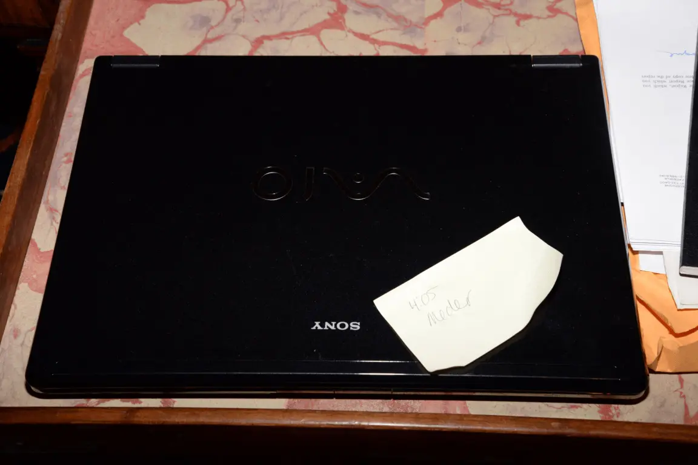
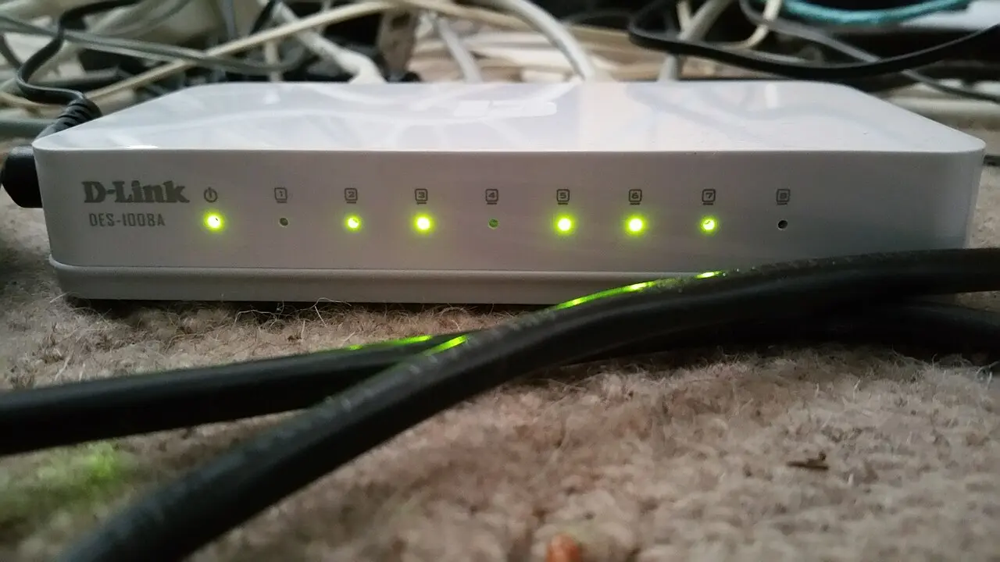

WSL2 measures your userland. It has no probe for your machine.

Spend 3–6 months in WSL2 to retire the userland risk — bash, coreutils, apt, git, Docker, dotnet/bun on Linux. That part is genuinely identical, and WSL2 now runs a real Microsoft-built Linux 6.18 kernel with systemd[1][2][3].
Then stop. WSL2 cannot teach you a display server, a bootloader, drivers, suspend/resume, or package-manager-owns-the-machine — and it hides the one decision that dominates day-one pain: your repos must live on ext4, not /mnt/c, which is exactly where a Dropbox-synced Windows folder puts them[4][5].
wslc runtime in public preview since 29 Jun 2026 (WSL 2.9.3), GA targeted autumn 2026[7]Access panel open
WSL went open source at Build 2025 under MIT, so the seams are now inspectable: wsl.exe, wslservice.exe, the Linux-side init/gns/localhost daemons and the plan9 server[14][15] — microsoft/WSL ⭐ 33k (Jul 2026)[16].
Still sealed: lxcore.sys (WSL1) and p9rdr.sys/p9np.dll, the \\wsl.localhost redirector[15].
Microsoft's own guidance: "We recommend against working across operating systems with your files… store your files in the WSL file system if you are working in a Linux command line."[4]
The mechanism is a plan9 file server inside wslservice.exe reached over a Hyper-V socket — one round-trip per operation[17].
/mnt under WSL2 vs 442 MB/s under WSL1 — is still open[18].
/mnt/c instead of ~/code.\\wsl$ — 10 MB/s against 2827.⚠ 2026 change · virtiofs is selectable, not default
Set virtiofs=true under [wsl2] with kernel 6.18.26.3-1+ and /mnt/* stops going through plan9. A PR merged 27 May 2026 gave each virtio device its own DMA pool, removing the last SWIOTLB contention point. plan9 remains the default[19][17].
virtiofs closes most of the gap. It does not close it — see the build-time gauge above.
Alarm · the Dropbox trap
A repo under C:\Users\you\Dropbox\… is doubly penalised. Every git status, dotnet build and node_modules walk pays the cross-OS tax on the gauges above — and the sync client indexes tens of thousands of dependency files it cannot exclude per-directory[21].
The fix is not tuning. It is git clone into ~/code, and letting the remote be the sync mechanism. This is a rehearsal for bare metal, where /mnt/c does not exist at all.
▲ MEASUREMENT CEILING ▲
No instrument in this rack reads above this line. Every channel below is a real migration risk that WSL2 cannot retire — not badly, not partially. Structurally.

Display server
You never pick Wayland vs X11, never configure a compositor, never hit fractional scaling or multi-monitor bugs. A real DE needs an XRDP hack; GNOME Shell wants 3D accel XRDP can't give, and KDE Plasma 6.8 is Wayland-only[22][23].

GPU drivers
/dev/dxg + stub libcuda.so in /usr/lib/wsl/lib, forwarding to the Windows driverInstalling a real Linux GPU driver breaks it — the stub symlinks get overridden and passthrough stops. You never do DKMS, kernel-module signing, or a Nouveau→proprietary switch[10].
Kernel ownership
No apt-owned kernel, no headers or module rebuild, no bad-kernel rollback. The one thing that makes Linux yours is the one thing Windows keeps[1].

Bootloader / firmware
No GRUB, no Secure Boot, no UEFI, and — the one that actually costs you a weekend — no "it doesn't boot" recovery drill.

Suspend / resume
Surfaces only as clock skew: "the VM for the WSL Linux distro doesn't have its clock updated when the host resumes." Fix is sudo hwclock -s — a symptom, not the test[24].
Battery / thermal / power
TLP, powertop, CPU governors, lid actions: untested, in every direction. On a laptop this is usually the deciding channel — and it reads nothing here.

Peripherals
Serial ports are unsupported outright. No udev-rules-for-a-real-device, no printer/scanner/webcam/fingerprint reality check[25][26][1].

Networking
LAN exposure needs netsh portproxy. mirrored mode fixes most of it but IPv6 ::1 is unsupported and it silently falls back to NAT on builds lacking the feature. You never touch NetworkManager, nmcli, or Wi-Fi/VPN driver reality[27][28].
inotify does not cross the boundary
File-watching on /mnt/c doesn't fire, so Vite / Angular / dotnet watch HMR silently dies. The workaround is polling — or, correctly, moving the repo to ext4[34].
Case sensitivity inverts per tree
Windows drives mount case-insensitive by default (case=off); ext4 is case-sensitive. Mixed-case files created in WSL become unopenable from Windows tools, and git config core.ignorecase disagreements produce phantom conflicts[35].
The 8-second rule
Config edits need the VM fully stopped (wsl --shutdown), not just the terminal closed[3].
[wsl2] memory=16GB processors=8 networkingMode=mirrored virtiofs=true [experimental] autoMemoryReclaim=gradual sparseVhd=true hostAddressLoopback=true
- Will my .NET/TS toolchain build and debug on Linux?
- Can I live in bash instead of PowerShell?
- Do my Docker/compose/homelab deploy scripts work?
- Will my ML/CUDA work run? — compute only
- Can I package-manage my own machine?
- Will my laptop suspend, wake, and hold charge?
- Will my GPU / Wi-Fi / fingerprint / dock work?
- Which desktop environment do I actually want?
- Can I recover an unbootable system?
Power-down condition
Stop learning from WSL2 when your friction stops being "how do I do X in Linux" and becomes "I want Linux to be the machine" — the point where WSL2 mistakes are still trivially unwound but the questions it can answer have run out[38]. Concretely, when all three read true:
- aAll repos on ext4, with no
/mnt/cdependency left anywhere in your workflow. - bsystemd units you wrote yourself — not units a tutorial pasted for you.
- cA dotfiles repo you can
git cloneonto a fresh box and be at home in minutes.
At that point the next rung is a machine WSL2 can't simulate, and everything on the ✗ column has to be learned on real hardware.
The staged ladder: what each rung of a Windows→Linux move actually proves
What each rung proves, what it structurally hides, the go/no-go signal, and the cost of retreating.
Trial hardware and VM paths for evaluating Linux before you commit (2026)
Live USB first (€10, 15 minutes, proves your actual hardware), then a full install on an external NVMe SSD.
Dual-boot Linux next to Windows in 2026 without wrecking the Windows install
Buy a second NVMe, keep the two OSes ignorant of each other, and pick Linux from the firmware boot menu.
Dropbox on Linux and shared folders: what actually works in 2026
btrfs/zfs/xfs are supported now — but you cannot share one Dropbox folder between a Windows and a Linux install.
Living in both OSes: running Windows and Linux for months without your setup rotting
One source of truth per asset class, replicated by a tool that knows the OS difference.
Exit criteria and the blocker inventory: decide the Linux switch on evidence, not vibes
A fill-in blocker inventory plus tickable go/no-go criteria and a pre-committed rollback date.